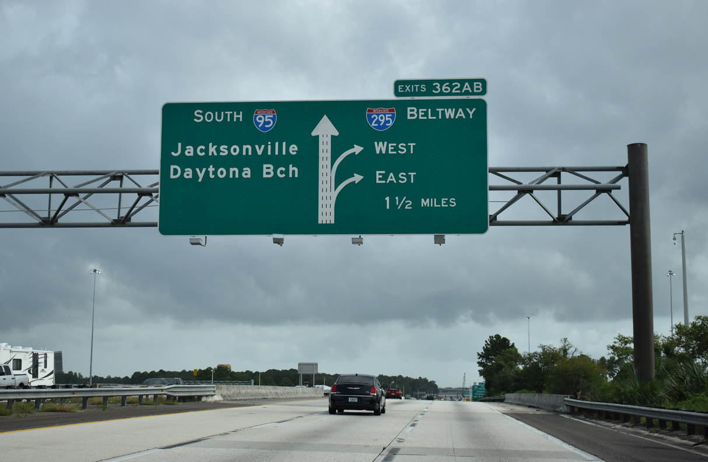
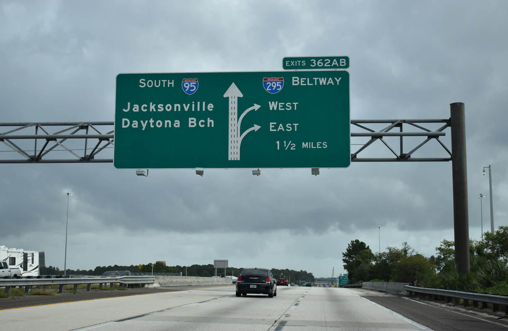

Lost Road
Beaches Galore
 Our last stop is a busy track, pehaps the most famous of them all. From the edge to Georgia to the edge of the Florida Keys,
Interstate 95 runs also from the New England territory up north, but when Florida meets up with I-95, it is there to take you to the eastern paradises in between. Locations include Jacksonville, Daytona Beach, Cocoa (home of Kennedy Space Center),
Melbourne, Palm Bay, West Palm Beach and Miami.

Our last stop is a busy track, pehaps the most famous of them all. From the edge to Georgia to the edge of the Florida Keys,
Interstate 95 runs also from the New England territory up north, but when Florida meets up with I-95, it is there to take you to the eastern paradises in between. Locations include Jacksonville, Daytona Beach, Cocoa (home of Kennedy Space Center),
Melbourne, Palm Bay, West Palm Beach and Miami.

The section of I-95 where the main road meets with the beltway route I-295, designed to bring drivers around the city of Jacksonville.
BACK
FIRST